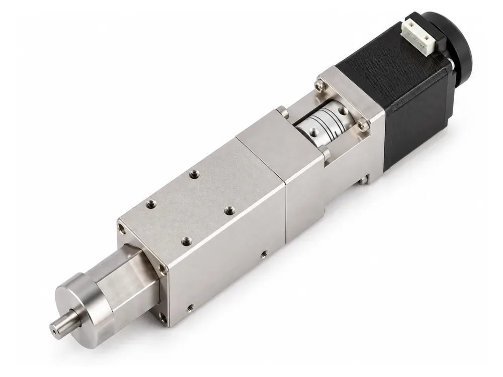
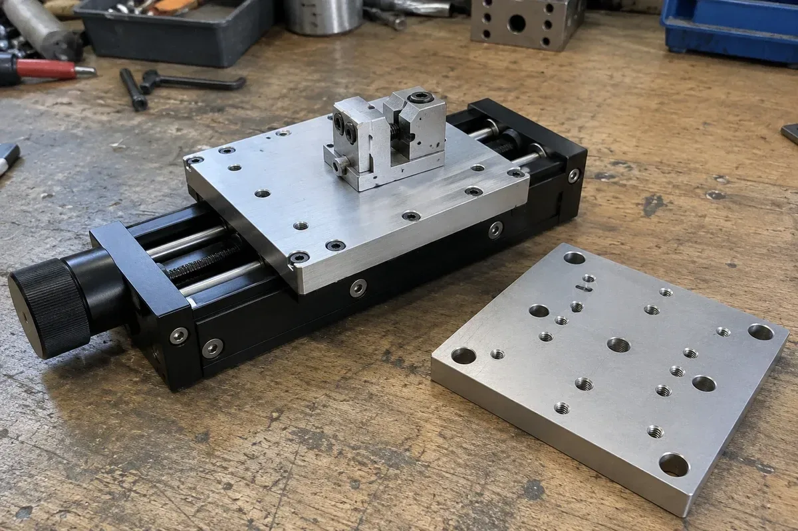
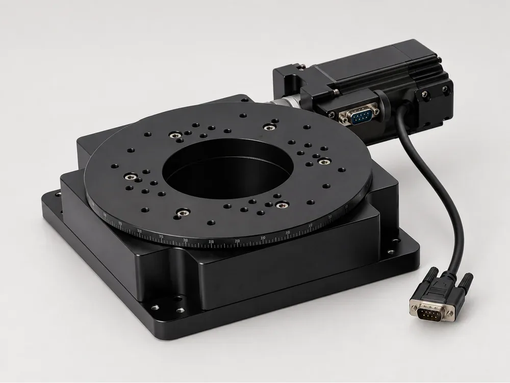

Positioning Stage Glossary: Terms Every Buyer and Integrator Should Know
Positioning stage datasheets use a compact vocabulary, and suppliers do not always use it the same way. This glossary defines the terms that appear across the 62-model catalogue at positioningstages.com, grouped by topic, with notes on where buyers most often go wrong.

Stage types
Linear stage (translation stage, motorised slide): a table on a guideway driven along one axis by a screw. See the linear series.
Vertical lift stage (Z stage, lift table): a table driven along the vertical axis, from bench stages to platforms.
Rotary stage (rotation stage, rotary positioner): a table that turns about its own axis, either over a limited arc or continuously through 360°.
Goniometer stage (tilt stage, arc swing stage): a stage that swings through an arc about a rotation centre above its own table.
Hollow rotary table (hollow rotary actuator, through-hole rotary table): a rotary indexer with a bore along the axis.
Multi-axis stage: an XY, XZ, XYθ or XYZ assembly built and aligned at the works as one unit. Explore them in the multi-axis series.
Mechanics and drive
Guideway: the bearing that carries the table. Crossed roller guides use rollers in line contact for higher stiffness and lower running error; linear ball guides cost less and tolerate more contamination.
Ball screw: the screw that converts motor rotation into linear motion. Lead is the travel per revolution; “φ6 lead 1” means a 6 mm diameter screw moving 1 mm per turn.
Worm gear: a reduction used on continuous rotary stages; CYDRA100-360-42 lists a 180:1 ratio. It allows unlimited rotation and is self-locking.
Cam indexer: the drive type of the hollow rotary tables.
Stepper and servo: the two motor types in the catalogue. Stepper sizes are given by frame, such as 28, 42 or 57; servo models are given by power, such as 100 W, 400 W or 750 W.
Open loop: no position feedback. The controller counts steps and trusts the mechanics, so a missed step is not detected or corrected.
Limit and origin sensor: switches that define the end of travel and a reference position, listed as external or built-in per model.

Travel and geometry
Total travel: the full stroke end to end. Half range: travel written as ± from centre. ±7.5 mm equals 15 mm total. positioningstages.com always publishes a total.
Table size: the mounting face of the moving table, such as 60×60 mm or φ100 mm.
Rotation centre height: on a goniometer, the distance from the mounting surface to the pivot point, for example 50±0.2 mm.
Parallelism: how parallel the table surface is to the base. Motion parallelism: how parallel the table stays as it moves. Straightness: deviation from a straight path along the travel.
Motion concentricity: how far a rotary axis wanders as the table turns. Runout: face and radial wobble of a rotating table, ±0.005 mm on the hollow tables.
Precision terms
Resolution: the smallest commanded increment. Repeatability: how closely a stage returns to a visited point. Positioning accuracy: how close it gets to the requested point over the full travel. Unidirectional figures approach from one side; bidirectional figures include approaches from both sides.
Backlash: lost motion on reversal. Indexing accuracy: on hollow tables, how close the table gets to a commanded station, published in arc-minutes.
Arc-minute and arc-second: 1° = 60 arc-min; 1 arc-min = 60 arc-sec.
The full reasoning is on the how to read the specifications page.
Load ratings
Payload: the published load, presumed horizontal and centred unless stated. Centre load: a rotary payload on the axis. Tilt moment: the off-centre load capacity in N·m. Radial and axial force: loads across and along the axis. Rated torque and permissible inertia torque: the drive limits for turning and accelerating a load. Holding torque: what a motor resists at standstill.

Specification basis and supply scope
Catalogue: transcribed from the supplied 2026 catalogue. Derived: normalised, such as half range converted to total. Not confirmed: absent or ambiguous in the source, never shown as zero.
Source drawing: the dimensioned catalogue drawing on each product page; product photos are not dimensioned drawings. Supply scope: what a quotation includes, such as stage, motor, drive, controller, cable set, CAD and mounting hardware. Record each explicitly. When you are ready, use the stage selector and then the quotation form.
Frequently asked questions
Where can I see these terms applied to real models?
Each product page on positioningstages.com has a specification table with a basis label for every parameter, plus a source drawing.
What should a positioning stage inquiry include?
The model or motion type, application, travel, payload, mounting orientation and accuracy requirements. The inquiry form accepts up to three PDF, JPEG, PNG, WebP or TIFF files, 10 MB each and 25 MB in total.
Are delivery times and certificates published?
No. Current certificates, availability and delivery dates need confirmation for the selected model and order.
How many standard models are in the catalogue?
62 standard models across six series: linear, goniometer, vertical lift, rotary, multi-axis and hollow rotary.
Contact
Found a term on a datasheet that is not here? Send it with the model number and we will explain how it applies. Email sales@deyivision.com or visit the positioningstages.com contact page.